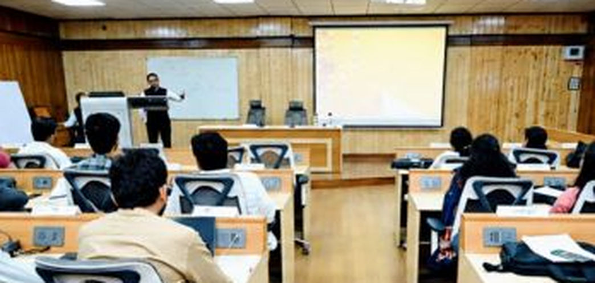
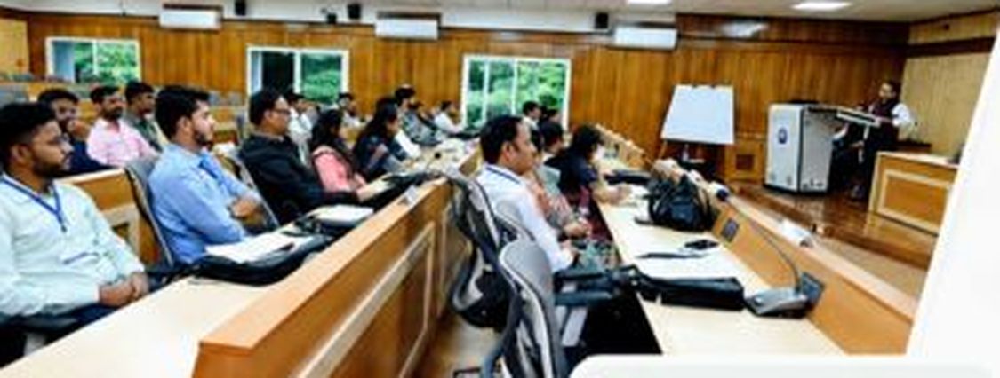
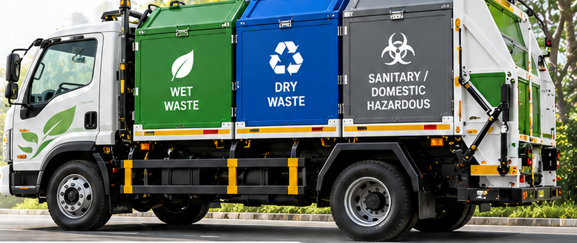

Portfolio
Our Work
Projects, tools and innovations from the field.
Water Security Plan, Bakshi Ka Talab, Lucknow
Commissioned by WaterAid India with Jal Seva Charitable Foundation. Work Order JSCF/UP/IN158/WO/2026-27/58, 28 August 2026.
Our approach: community insight with technical excellence
Participatory water budgeting
Engaging communities and understanding shared priorities.
Technical analysis
Data-driven assessment of groundwater resources, quality, demand and risks.
Plan and action roadmap
Prioritised interventions and a 20-year implementation pathway.
What the plan delivers
Ward-level plans
Plans for all 19 wards, built on community consultation.
Consolidated town plan
One actionable framework bringing every ward together.
Assessment and consultation
Situation assessment, field engagement and stakeholder consultation.
Institutional framework
Clear roles and a delivery pathway for the Nagar Panchayat and partners.
Research-based training for Urban Local Bodies
Evidence-backed, field-informed content developed for the resource person at the Dr. Raghunandan Singh Tolia Uttarakhand Academy of Administration (ATI), Nainital.
For: mayors, chairpersons, executive officers, sanitary and field inspectors and other ULB officials.
- Policy and regulatory framework
- SWM systems and best practices
- Planning, finance and service delivery
- Case studies and field insights
- Community engagement and behaviour change


Track record
Selected projects and case studies
Emissions reduction
Cradle-to-gate LCA of fly-ash bricks for a Bangalore-based client found a lower-carbon formulation with improved strength.
Efficiency target
Deep-learning surrogate model with IIT Roorkee to speed CFD prediction of RDF combustion in waste-to-energy boilers.
Thickness reduction
ML-based CBR and pavement prediction for geosynthetic-reinforced expansive soils.
National outlook
Projection of urban India's MSW, GHG emissions and Bio-CNG potential under SBM-U 2.0.
Wastewater treatment
Activated carbon and chitosan-coated bentonite achieving 86–95% removal of lead, chromium, mercury, COD and BOD.
Biochar
Biochar from rice husk, neem leaves and sludge, with LCA-based GHG offset analysis.
Heat and pollution
PM₂.₅ as a co-indicator of heat–pollution vulnerability in Vijayawada, with a policy-gap review.
Modular Waste Collection Vehicle
Adjustable bin compartments based on community segregation levels, supporting source segregation, modular design for different communities and cleaner cities. Inventor: Dr. Abhay Kumar Verma (Principal Investigator). Application No. 202611118413, filed 3 October 2026, Indian Patent Office, New Delhi.

SWM Logbook Generator
A bilingual web tool that generates 30-day, audit-ready Excel logbooks for ULB, MRF and mixed-waste facilities.
- Gate intake from population or actual TPD, with seasonal variation
- MRF sorting with custom fractions that always sum to 100%
- Processing and rejects balanced against intake